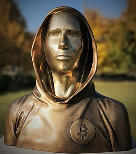

Что такое Bitcoin?
Satoshi Nakamoto — псевдоним человека или группы людей, разработавших протокол криптовалюты биткойн и создавших первую версию программного обеспечения, в котором этот протокол был реализован. Было предпринято несколько попыток раскрыть реальную личность или группу, стоящую за этим именем, но ни одна из них не привела к успеху.

31 октября 2008 года Накамото опубликовал статью «Bitcoin: A Peer-to-Peer Electronic Cash System» в списке рассылки о криптографии (The Cryptography Mailing list), в которой описал Биткойн — полностью децентрализованную систему электронной наличности, не требующую доверия третьим сторонам. В начале 2009 года он выпустил первую версию виртуального кошелька, использующего биткойн, и запустил сеть Биткойн.
Что такое Satoshi?
Как доллар делится на центы, рубль — на копейки, так и у биткоина есть наименьшая единица. Но если фиатные валюты имеют всего 2 десятичных знака после запятой, то bitcoin ― 8. Простыми словами, сатоши ― это одна стомиллионная часть BTC. В случае с биткоином единицы меньше не существует.
Плюсы BTC
По сравнению с национальными валютами за переводами криптовалют никто не следит. Следовательно применить какие-либо санкции к отправителю/получателю никто не может. Запретить осуществлять переводы определённому лицу тоже никто не может. Полная свобода транзакций.
В криптовалютах для хранения ключей доступа к средствам используется проверенная криптография с разделением на открытые и закрытые ключи. Аналогичные алгоритмы используют банки и другие финансовые организации для защиты своих данных. А суммарная вычислительная мощность сети Bitcoin, которая используется для защиты истории сделок, еще в 2012 году превысила вычислительные мощности любого суперкомпьютера в мире.
Децентрализация. Одна из основополагающих характеристик криптовалют — децентрализация. Передача полномочий и обязанностей по принятию решений из центра в другие организации. В рамках государственного сектора децентрализация означает, что решения принимаются не центральным правительством, а местными и региональными органами власти.
Минусы BTC
Волатильность. Цена BTC в любой момент может резко обрушиться более чем в два раза. Например, 3 месяца назад цена биткоина была $60. 25 мая она упала свыше чем на 50% до минимума в $29800.
Высокие комиссии. Сатоши Накамото создал Bitcoin как быстрый и дешевый способ денежных переводов. Но уже в 2021 году средняя комиссия в сети превышает $2 за транзакцию.
Процветание теневого рынка. Криптовалюты вывели теневой интернет на другой уровень. Здесь торгуют запрещенными веществами, совершают прочие противоправные действия, а все расчеты ведут в цифровых монетах. Крипта в даркнете является основной валютой. Самые опасные преступники пользуются BTC.
Волатильность - финансовый показатель, отражающий то, как сильно меняется цена на актив или товар за короткий промежуток времени.
Почему биткоин так дорого стоит?
Цена криптовалюты растет каждый раз, когда фиатные деньги доказывают свою несостоятельность.
Криптовалюта совершила настоящую революцию в электронных платежах. Биткоин был задуман как платформа с анонимными, защищенными быстрыми и дешевыми транзакциями. Увы, но пока что не всё задуманное сделано.